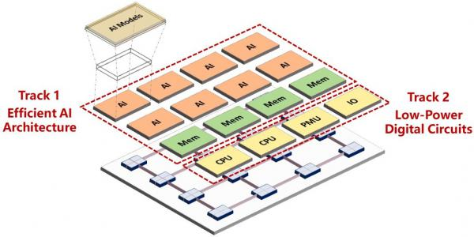
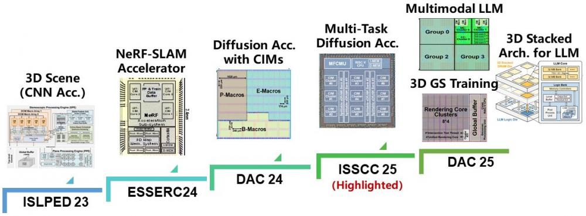
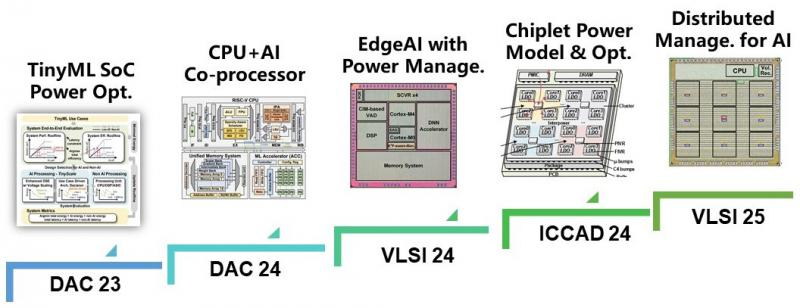

What We Do
Our research is mainly to explore more efficient computing chips for AI and other emerging applications. To keep improving the efficiency, we conduct research from both architecture-level explorations (Track 1) and novel low-power digital circuit techniques (Track 2).

At architecture-level, we adopt domain-specific architecture (DSA) or compute-in-memory (CIM) techniques to improve computing efficiency. We design DSA accelerators for AI and 3D Gaussian Splatting. CIM has been used for multiple accelerators targeting NeRF or Diffusion. We also explore emerging architectures, e.g., 3D arch, for LLM applications.

At circuit-level, we believe there is still improvement potential by leveraging "architecture-circuit" co-design/optimizations. We develop power modeling and workload-driven optimization for TinyML and chiplets. We also tapeout chips with advanced power management techniques for heavy workloads such as AI.
